Hello world
Your first project with TatEngine.
Your first project with TatEngine.
Lets open projects editor
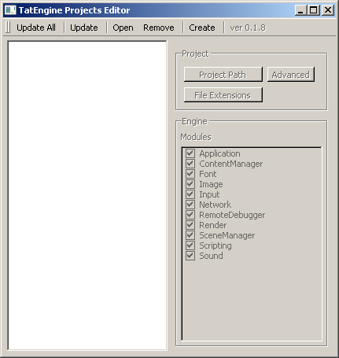and press create project button
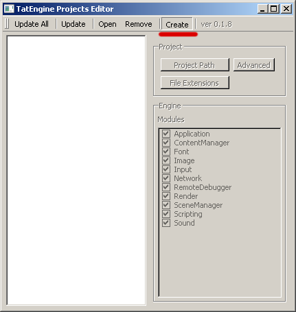set project name and press project dir
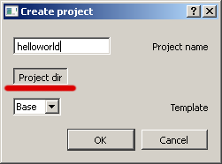select sdk project dir and press ok
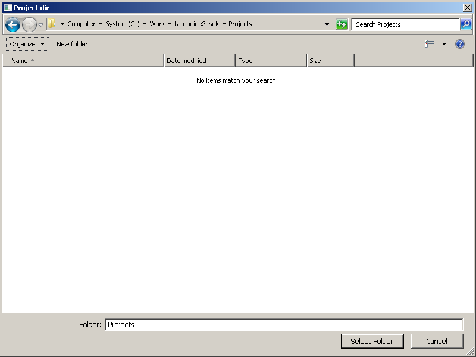press ok to create new project
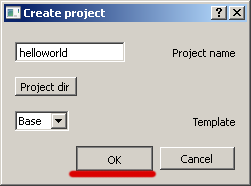select project in list, and press update (or update all) to generate projects for your ide
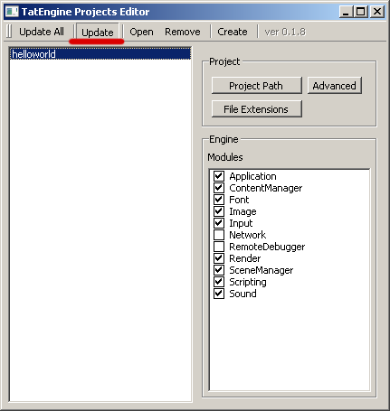so here a new project
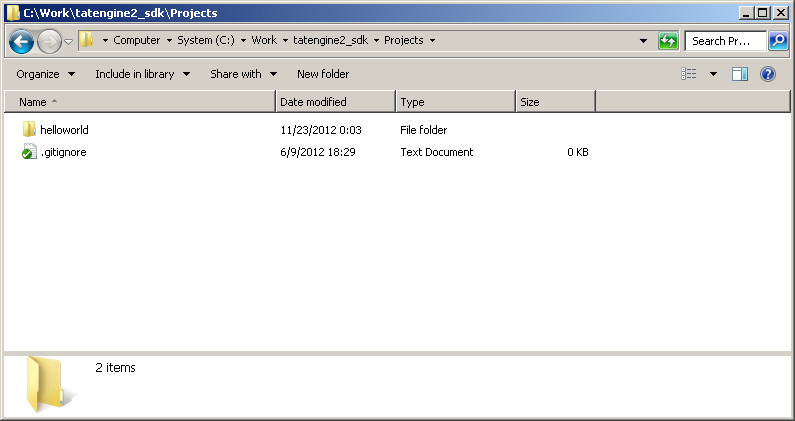and files for Visual Studio.
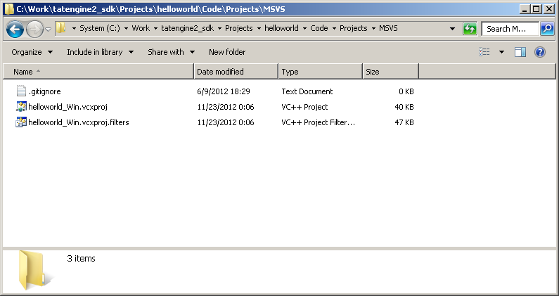If you have Visual Studio, just open project and build it in Release
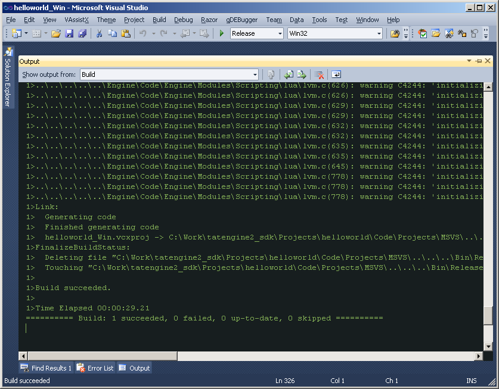and after that, open tatworld.json in notepad, and change this lines to helloworld
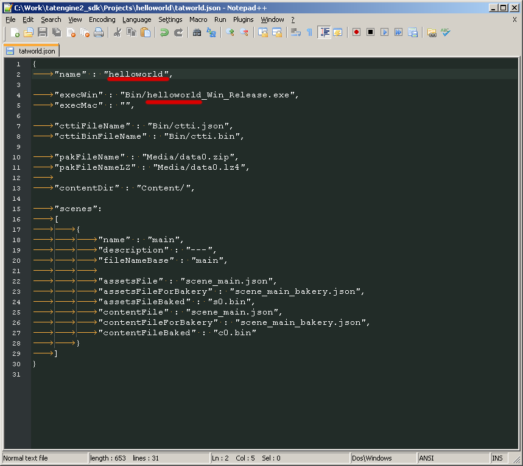If you dont have Visual Studio or just dont want to open it now, dont panic, project already prebuilted for you
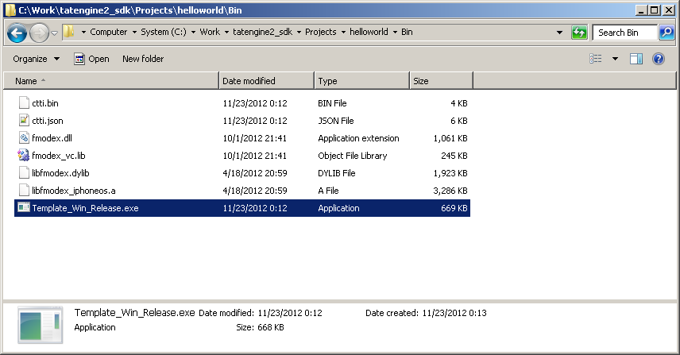Lets open world editor
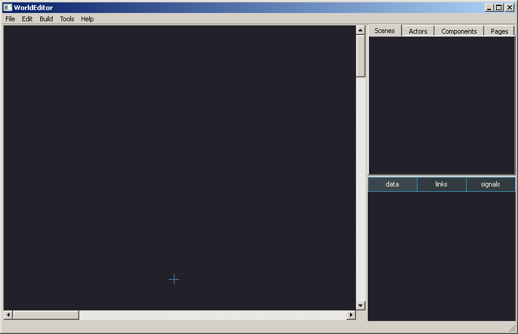press open project and select tatworld.json file
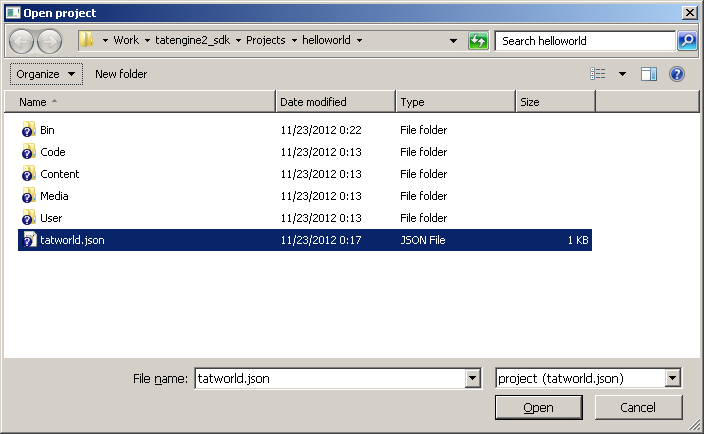ok, there it is, just press on our main scene (or level, as you like)
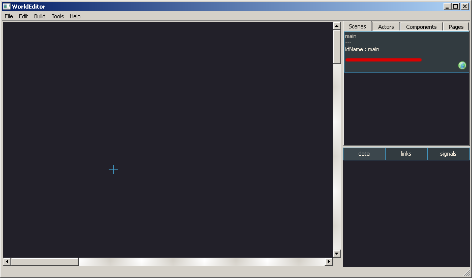oh

just press save for bakery
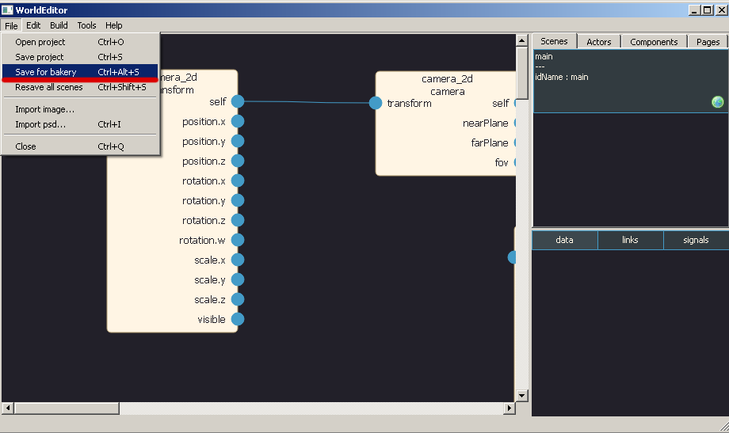and than press bake and run
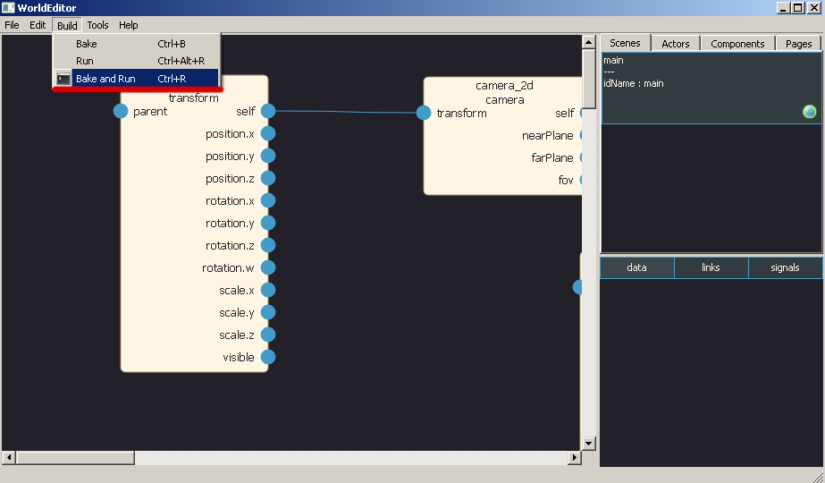you should see template scene
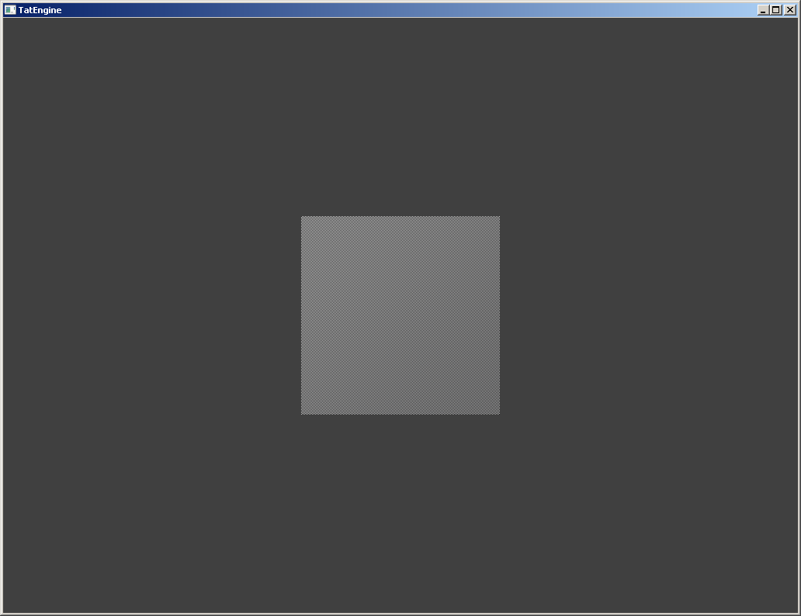